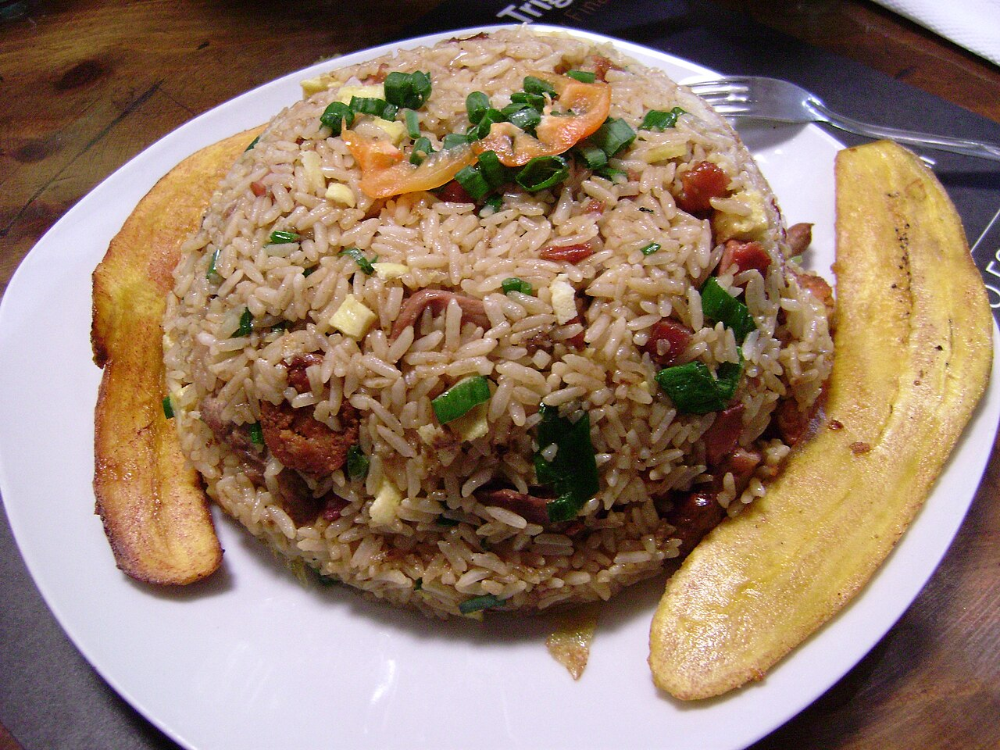
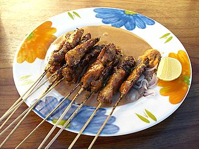

Resep Rumahan Favorit
Kumpulan resep sederhana, praktis, dan hemat untuk masakan sehari-hari di rumah.
Nasi Goreng Sederhana
Bahan-bahan:
- 2 piring nasi putih
- 2 siung bawang putih
- 1 butir telur
- Kecap manis secukupnya
- Garam & merica secukupnya
Cara Membuat:
- Tumis bawang putih hingga harum.
- Masukkan telur, orak-arik sebentar.
- Tambahkan nasi putih, aduk rata.
- Beri kecap manis, garam, dan merica.
- Sajikan hangat dengan kerupuk.
Mie Goreng Jawa

Bahan-bahan:
- 1 bungkus mie telur
- 2 siung bawang putih
- 1 butir telur
- Sayuran (sawi, kol)
- Kecap manis & saus tiram
Cara Membuat:
- Rebus mie hingga matang, tiriskan.
- Tumis bawang putih, masukkan telur orak-arik.
- Tambahkan sayuran, lalu masukkan mie.
- Beri kecap manis & saus tiram, aduk rata.
- Sajikan dengan taburan bawang goreng.
Sate Ayam
Bahan-bahan:
- 500 gr daging ayam (potong dadu)
- Tusuk sate secukupnya
- Bumbu kacang siap pakai
- Kecap manis secukupnya
Cara Membuat:
- Tusukkan ayam ke tusuk sate.
- Bakar sate hingga matang, bolak-balik.
- Olesi kecap manis agar lebih gurih.
- Sajikan dengan bumbu kacang.